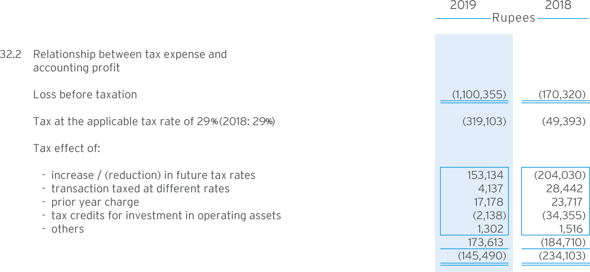

(Amounts in thousand)
32.1 Following is the position of the Company's open tax assessments:
32.1.1 The Company in accordance with section 59B (Group Relief) of the Income Tax Ordinance (ITO), 2001 has surrendered to Engro Corporation Limited (ECL), the associated company (then the holding company), its tax losses amounting to Rs. 4,288,134 out of the total tax losses of Rs. 4,485,498 for the years ended December 31, 2006, 2007 and 2008 (Tax years 2007, 2008 and 2009) for cash consideration aggregating Rs. 1,500,847, being equivalent to tax benefit/effect thereof.
The Company had been designated as part of the Group of Engro Corporation Limited by the Securities and Exchange Commission of Pakistan (SECP) through its letter dated February 26, 2010. Such designation was mandatory for availing Group tax relief under section 59B of ITO and a requirement under the Group Companies Registration Regulations, 2008 (the Regulations) notified by the SECP on December 31, 2008.
Further, the Appellate Tribunal, in respect of surrender of aforementioned tax losses by the Company to ECL for the years ended December 31, 2006 and 2007, decided the appeals on July 1, 2010 in favour of ECL, whereby, allowing the surrender of tax losses by the Company to ECL. The tax department has filed reference application there against before the High Court of Sindh dated October 23, 2010, which is under the process of hearings. On May 20, 2013, the Appellate Tribunal also decided similar appeal filed by ECL for the year ended December 31, 2008 in favour of ECL. The Company based on the merits of the case expects a favorable outcome of the matter.
32.1.2 On January 29, 2009, the Deputy Commissioner Inland Revenue (DCIR) reduced tax loss from Rs. 1,224,964 to Rs. 1,106,493 for the tax year 2007. The Company’s appeal against the order of Commissioner Inland Revenue (CIR) on March 11, 2009 is currently in the process of being heard. However, the Company, based on the opinion of its tax consultant, is confident of a favorable outcome of the appeal, and hence the balance of taxes recoverable has not been reduced by the effect of the aforementioned disallowance.
32.1.3 On October 31, 2013, CIR raised a demand of Rs. 223,369 for tax year 2009 by disallowing the provision for advances, stock written-off, repair and maintenance, sales promotion and advertisement expenses etc. On May 25, 2015, in response to the appeal filed against the audit proceedings on December 9, 2013, CIR Appeals issued an appellate order in favour of the Company holding the selection of case for audit to be illegal and without jurisdiction. The tax department has filed an appeal against the order with the Appellate Tribunal Inland Revenue (ATIR) on August 11, 2015, however, no hearing has been conducted to date. The Company, based on the opinion of its tax consultant, is confident of a favourable outcome of the appeal, and, accordingly taxes recoverable have not been reduced by the effect of the aforementioned disallowances.
32.1.4 On May 20, 2014, the Additional Commissioner Inland Revenue (ACIR) raised a demand of Rs. 713,341 for tax year 2012 by disallowing the initial allowance and depreciation on certain additions to property, plant and equipment, provision for retirement and other service benefits, purchase expenses, sales promotion and advertisement and other expenses etc. On January 26, 2017, CIR Appeals upheld the decision of ACIR in respect of provision for retirement benefits and marketing support reimbursements against appeal filed with CIR Appeals dated May 28, 2014. On August 30, 2017, the Company has filed an appeal with ATIR against the order of CIR Appeals and based on the opinion of its tax consultant, is confident of a favourable outcome of the appeal, and, accordingly taxes recoverable have not been reduced by the effect of the aforementioned disallowances.
32.1.5 On December 23, 2015, ACIR raised a demand of Rs. 73,962 for tax year 2014 by disallowing the loss on sales of raw milk considered as trading activity, depreciation on certain additions to property, plant and equipment and tax credit under 65B etc. On December 06, 2018, CIR appeals upheld the decision of ACIR on all major items against appeal filed with CIR Appeals on January 22, 2016. During the year on March 07, 2019, the Company has filed an appeal with ATIR against the order of CIR Appeals and based on the opinion of its tax consultant, is confident of a favourable outcome of the appeal, and, accordingly taxes recoverable have not been reduced by the effect of the aforementioned disallowances.
32.1.6 On June 29, 2016, the DCIR raised a demand of Rs. 541,221 for tax year 2013 by disallowing the loss on sales of raw milk considered as trading activity, stock written-off, finance cost allocation against advance for purchase of Engro Foods Netherlands and certain other items, research and business expenses, adjustment of tax losses for tax year 2011 and minimum turnover tax credit for tax years 2008, 2010 and 2011 etc. On January 26, 2017, CIR (Appeals) upheld the decision of DCIR in respect of minimum turnover tax credit and finance cost allocation against appeal filed with CIR Appeals on July 29, 2016. On May 29, 2018, the DCIR passed an appeal effect order based on the decision of CIR Appeals reducing the demand to Rs. 98,548. On May 15, 2017, the Company has filed an appeal with ATIR against the order of CIR Appeals and based on the opinion of its tax consultant, is confident of a favourable outcome of the appeal, and, accordingly taxes recoverable have not been reduced by the effect of the aforementioned disallowances.
32.1.7 On June 29, 2016, ACIR raised a demand of Rs. 59,772 for tax year 2010, primarily on account of disallowance of sales promotion and freight expenses. On November 23, 2018 CIR Appeals upheld the decision of ACIR in respect of loss on sale of raw milk and inventory write-off while giving relief on all other matters against appeal filed with CIR appeals on August 15, 2016. During the year on March 07, 2019 the Company has filed an appeal with ATIR against the order of CIR Appeals and based on the opinion of its tax consultant, is confident of a favourable outcome of the appeal, and, accordingly taxes recoverable have not been reduced by the effect of the aforementioned disallowances.
32.1.8 On December 7, 2016, ACIR raised a demand of Rs. 34,134 for tax year 2011 by disallowing depreciation on certain additions to property, plant and equipment, provision for retirement and other service benefits, sales promotion and advertisement and other expenses etc. During the year on April 15, 2019 CIR Appeals upheld the decision of ACIR on all major items against appeal filed with CIR appeals on January 5, 2017. During the year on June 03, 2019 the Company filed an appeal with ATIR against the order of CIR appeals and based on the opinion of its tax consultant, is confident of a favourable outcome of the appeal, and, accordingly taxes recoverable have not been reduced by the effect of the aforementioned disallowances.
32.1.9 On November 3, 2017, ACIR raised a demand of Rs. 511,801 for tax year 2016 by disallowing minimum turnover tax credit, expenses on account of Employee Share Option Scheme and Worker’s Welfare Fund. On June 30, 2018, CIR Appeals upheld the decision of ACIR in respect of minimum turnover tax credit and Employee Share Option Scheme against the appeal filed with CIR Appeals on November 23, 2017. On August 15, 2018, the Company filed an appeal with ATIR against the order of CIR Appeals and based on the opinion of its tax consultant, is confident of a favourable outcome of the appeal, and, accordingly taxes recoverable have not been reduced by the effect of the aforementioned disallowances.
32.1.10 The ACIR issued an order on February 22, 2019 by disallowing expenses on account of Employee Share Option Scheme, loss on Sale of disposal of assets and assets written off. During the year on August 19, 2019, CIR Appeals upheld the decision in respect of Employee Share Option Scheme and assets written off against the appeal filed with CIR Appeals on April 24, 2019. During the year on October 24, 2019 the Company filed an appeal with ATIR against the order of CIR Appeals and based on the opinion of its tax consultant, is confident of a favorable outcome of the appeal, and, accordingly income tax recoverable has not been reduced by the effect of aforementioned order.
